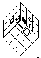
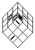

Solving the Top 2 Layers
In the following diagrams, patterns are used to designate the faces of the
cube. White square with a black border is the front face, a line segment
denotes the color of the right face, and black square stands for the color
of the top face. The goal of this stage is to correctly
place and orient a top corner with it's middle edge piece at the same
time. The diagrams show the front, right, and bottom faces along with the
2 pieces that are to be placed. All other pieces are not relevant and so
do not appear. The center pieces are marked as a frame of reference.
The following situations can occur:
1) The 2 pieces are already in place
2) The top corner is in place but the middle edge is not
3) The middle edge is in place but the top corner is not
4) The top corner and middle edge are on the bottom face
The 4th case can be broken down into 2 distinct cases:
4a) The pieces are next to each other
4b) The pieces are separated.
It is possible that a reflection will need to be performed to match one
of the diagrams. Reflections will be over the line that cuts the cube
diagonally in half between the right and front faces. Therefore, the
following substitutions must be made:
R -> F' R' -> F R2 -> F2
F -> R' F' -> R F2 -> R2
L -> B' L' -> B L2 -> B2
B -> L' B' -> L B2 -> L2
D -> D' D' -> D D2 -> D2
U -> U' U' -> U U2 -> U2
Note that when both pieces are in place, a reflection or an inversion will
both work.
Please note that the sequences that start with a twist of the bottom face
are enclosed in brackets. This is to signify that the enclosed twist is
only when the corner is directly below the place it belongs. If it is not
in this position, then it is not necessary to move the corner there and
then perform the sequence. Just move the bottom face appropriately so that
it will end up in the correct position. In other words, if the corner
piece is in the FLD position and the sequence would move the
coner from FRD to FLD, it is wasteful to move the
piece to FRD and then move it back to FLD.
Before we start, let me emphasize that performing the algorithms with the first layer on the top (cross on the top) is probably the
worst option! The images below seem to suggest that you should be performing them this way, but this is not true. When I made this page back in 1997,
I thought that showing the cube in this view would give me the best position for the algorithm description and NOTHING else. I perform the F2L algorithms
with the white cross in my left palm and heavily use finger shortcuts for the moves. Other cubists proposed to put the cross on the bottom, which
is also a good idea. The point is - use whatever seems right for you, but stay away from the cross on the top. This is not a good option.
Pieces are in place but not oriented
| Pattern |
Algorithm(s) |
|
1) R2 D2 R D R' D R D2 R |
|
2) R2 D2 F' R2 F D2 R D' R |
|
3) R' D R' D' B' D B R2 |
Insert the corner and preserve the edge
| Pattern |
Algorithm(s) |
|
4) [D] R' D R D2 R' D R |
|
5a) [D2] R' D B' D' B D' R
5b) R2 D' R2 D' R2 D2 R2 |
Insert the corner and flip the edge
| Pattern |
Algorithm(s) |
|
6) [D] R' D' R D' F D F' |
|
7) R' D R F D2 F' |
Insert the edge and preserve the corner
| Pattern |
Algorithm(s) |
|
8) [D] F D' F' D' R' D R |
Insert the edge and twist the corner
| Pattern |
Algorithm(s) |
|
9) F D' F2 R F R' |
|
10) R' D' R D R' D' R |
Connected in bottom layer
| Pattern |
Algorithm(s) |
Pattern |
Algorithm(s) |
|
11) F' R F R' |
|
14a) F L B D' B' L' F'
14b) R' D R D2 F D F' |
|
12) [D'] F D2 F' D R' D' R |
|
15) [D2] R2 D2 R D R' D R2 |
|  |
13) (D) R' D R D' R' D' R |
|
16) F D2 F' D' F D F' |
Separated in bottom layer
| Pattern |
Algorithm(s) |
Pattern |
Algorithm(s) |
|
17) [D'] F D2 F' D2 F D' F' |
|
20) [D'] F D' F' D R' D' R |
|
18) R' D' R |
 |
21) [D2] R' D' R2 F' R' F |
|  |
19) [D'] F D F' D2 F D' F' |
|
22) [D] F D2 F2 R F R' |
Some final notes
It may be necessary to move a piece to the bottom layer. This can happen
for the following reasons:
1) The corner to be placed is in one of the other 3 top corner positions
2) The edge to be placed is in one of the other 3 middle edge positions
Twist the entire cube so that the piece is in the FR position and
perform following 3 twist sequence: R' D R
Obviously, reflections can be used so that the cube need not be rotated.
Also, be careful NOT to put the matcing piece into the wrong place in the
top two rows or this will have to be performed again! For example, you have
the middle edge on the bottom layer but the corresponding
corner is in one of the other 3 top layer positions. When moving this corner
to the bottom layer, don't move the edge from the bottom layer.
To save time, if a piece you need is not currently available, move on to
another corner/edge position.